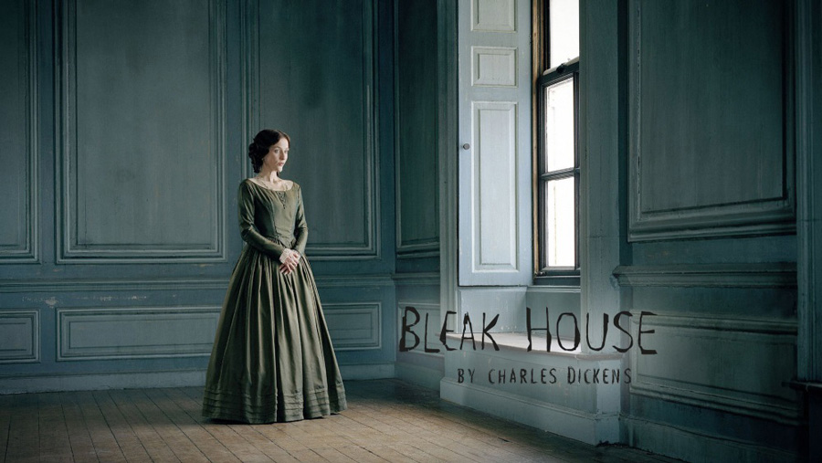
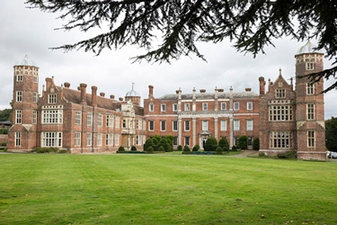
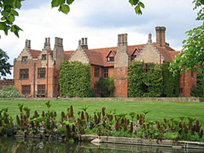
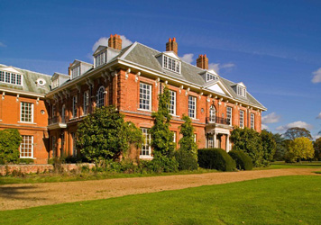
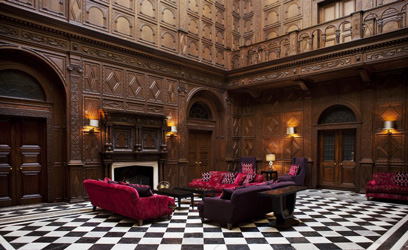

| Character | Actor |
|---|---|
| Esther Summerson | Anna Maxwell Martin |
| Lord Chancellor | Ian Richardson |
| Usher | Anthony Cozens |
| Mr. Tangle | Sevan Stephan |
| Mr. Tulkinghorn | Charles Dance |
| Mr. "Conversation" Kenge | Alistair McGowan |
| Mr. Brownlow | Alastair Galbraith |
| Lady Honoria Dedlock | Gillian Anderson |
| Sir Leicester Dedlock | Timothy West |
| Gridley | Tony Haygart |
| Richard Carstone | Patrick Kennedy |
| Ada Clare | Carey Mulligan |
| Miss Flite | Pauline Collins |
| Young Esther | Ruby Williams |
| Miss Barbary | Kelly Hunter |
| William Guppy | Burn Gorman |
| 'Nemo' | John Lynch |
| Jo | Harry Eden |
| Snagsby | Sean McGinley |
| Clamb | Tom Georgeson |
| Mrs. Jellyby | Liza Tarbuck |
| Caddy Jellyby | Natalie Press |
| Krook | Johnny Vegas |
| Fortnum | John Sheahan |
| Hortense | Lilo Baur |
| Mrs. Rouncewell | Anne Reid |
| John Jarndyce | Denis Lawson |
| Harriet | Lisa Hammond |
| Harold Skimpole | Nathaniel Parker |
| Rosa | Emma William |
| Neckett | Rod Arthur |
| Pawnbroker | Andy Linden |
| Mrs. Pardiggle | Roberta Taylor |
| Brickmaker | Cosh Omar |
| Jenny | Charlie Brooks |
| Angry Man in Street | Tim Bruce |
| Allan Woodcourt | Richard Harrington |
| Coroner | Peter Guinness |
| Clergyman at 'Nemo's' Funeral | Paul Sirr |
| Laurence Boythorn | Warren Clarke |
| Mr. Bayham Badger | Richard Griffiths |
| Mrs. Badger | Joanna David |
| Servant at London Lodgings | Emily Jewell |
| Prince Turveydrop | Bryan Dick |
| Old Mr. Turveydrop | Matthew Kelly |
| Mrs. Blinder | Amelda Brown |
| Tom Neckett | Billy Hill |
| Charley Neckett | Katie Angelou |
| Polly | Sally Leonard |
| Clergyman | Keith Bartlett |
| Rev. Chadband | Robert Pugh |
| Mrs. Chadband | Catherine Tate |
| Guster | Michelle Tate |
| Policeman in Snagsby's | Dominic Coleman |
| Inspector Bucket | Alun Armstrong |
| Old Woman | Mary Sheen |
| Sergeant George | Hugo Speer |
| Phil Squod | Michael Smiley |
| Smallweed | Phil Davis |
| Judy Smallweed | Loo Brealey |
| Ironmaster Rouncewell | Tim Dantay |
| Mrs. Woodcourt | Di Botcher |
| Young Smallweed | Levi Hayes |
| Mercury | Richard Cant |
| Policeman Outside Krook's | Benedict Martin |
| Countryman | Alex Blake |
| Little Girl | Lila Sharp |
| Mr. Grubble | Patrick Monckton |
| Vholes | Dermot Crowley |
| Mrs. Guppy | Sheila Hancock |
| Deal Innkeeper | Barry Ewart |
| Policeman Outside Snagsby's | Benedict Martin |
| Policeman at Tulkinghorn's | Howard Coggins |
| Mr. Growler | Brian Pettifer |
| Constable at Deadlock's | Richard Pettyfer |
| Constable at Station | Jack Brough |
| Lawyer | Tony Guilfoyle |
| Dancer | Andrew Osbourne |
| Court Yard Local | Nick Turner |
| Policeman | Neg Dupree |
| Role | Person |
|---|---|
| Director (episodes 1 - 9) | Justin Chadwick |
| Director (episodes 10 - 15) | Susanna White |
| Screenplay | Andrew Davies |
| Producer | Nigel Stafford-Clark |
It was filmed on location in Hertfordshire, Bedfordshire and Kent from February 2005 through to July 2005. The exterior of the Dedlock's country house Chesney Wold, was represented by Cobham Hall in Kent, as was the exterior of Mr Tulkinghorn's Office. Cobham Hall was also used for some interiors of Chesney Wold such as the hallway and the staircase. The exterior of Bleak House was represented by Ingatestone Hall in Essex. Other houses used for interior shots and garden locations include Balls Park in Hertfordshire (used as the exterior of Boythorn's house and the vestibule used as the Chancery Law Court), Bromham Hall in Bromham, Bedfordshire and Luton Hoo in Bedfordshire.

Cobham Hall (Chesney Wold)

Ingatestone Hall (Bleak House)

Balls Park (Boythorn's House)

Balls Park interior (Law Court)